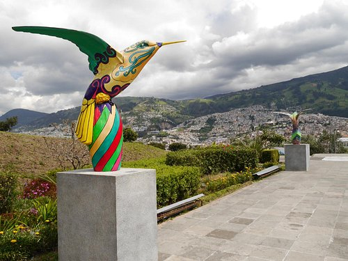
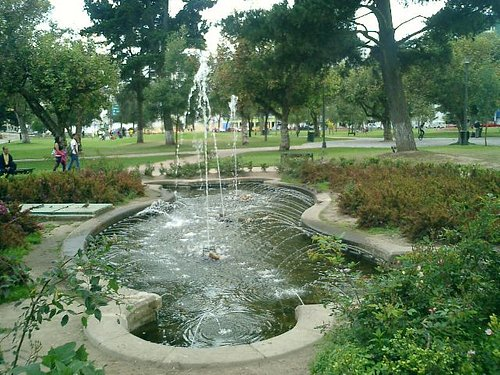
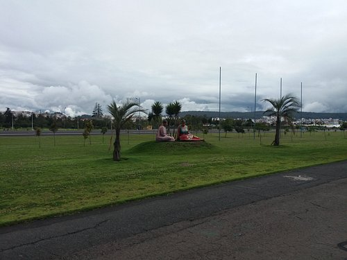

| Nombre |
lugar |
foto |
Descripción |
| Parque la Carolina |
Norte |
 |
Es una parque muy lindo en medio de la ciudad, muy accesible y creemos que el más promovido en Quito. |
| Parque Metropolitano |
Norte |
 |
Es un lugar maravilloso! Con senderos para caminar o practicar mi deporte favorito, ciclismo, etc. |
| Parque Itchimbia |
Norte |
 |
Es una de los parque que tiene Quito donde se podrá hacer ejercicio con unas vistas del centro histórico de Quito. |
| Parque El Ejido |
Centro |
 |
Parque situado en un área comercial de Quito, de fácil acceso por medios de transporte, con atractivos. |
| Parque Bicentenario |
Norte |
 |
Creo que es el mejor parque de Quito, el más grande, cero smog, cero vehículos, muchos senderos, canchas, árboles. |